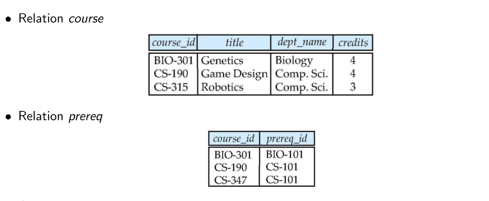

DBMS WEEK-3
Nested Subquery
- A subquery is a
select-from-whereexpression that is nested within another query.
Some Clause
5 > some(0, 5, 6)- True5 = some(0, 5, 6)- True
All Clause
7 > all(0, 5, 6)- True5 = all(0, 5, 6)- False
Subqueries in Where Clause
select distinct course_id
from section
where semester ='Fall' and year = 2009 and
course_id in ( select course_id
from section
where semester ='Spring'
and year = 2010
)Subqueries in Where Clause (Continued)
select name
from instructor
where salary > all (select salary
from instructor
where dept_name = 'Biology')select name
from instructor
where salary > some (select salary
from instructor
where dept_name = 'Biology')Exist Clause
- Returns only
TrueorFalse
select course_id
from section as S
where semester = 'Fall' and year = 2009 and
exists (select *
from section as T
where semester = 'Spring' and year = 2010
and S.course_id = T.course_id)Subqueries in From Clause
select dept_name, avg_salary
from (select dept_name, avg (salary)
from instructor
group by dept_name) as dept_avg (dept_name,avg_salary)
where avg_salary > 42000
With Clause
- Used to define a temporary table that we can use in our sql
with dept_total(dept_name, value) as (
select dept_name, sum(salary)
from instructor
group by dept_name
)select dept_name
from dept_total
where dept_name='Finance'Here, dept_total is a temporary table.
Modification of Database
DELETE
delete from instructor
where dept_name in (select dept_name
from department
where building = 'Watson')INSERT
INSERT into takes values (1, 'C001', 'CS', 'spring', '2022', 'S')INSERT into takes (ID, course_id, sec_id, semester, year_, grade)
values ('1', 'C001', 'CS', 'spring', '2022', 'S')Modification of Database (Continued)
UPDATE
update instructor
set salary = salary ∗ 1.03
where salary <= 100000update instructor
set salary = case
when salary <= 100000
then salary ∗ 1.05
else salary ∗ 1.03
endTypes of Joins
- Cross Join
- Inner Join
- Natural Join
- Left Outer Join
- Right Outer Join
- Full Outer Join
- Self Join
Example Table

Cross Join
CROSS JOINreturns the Cartesian product of rows from tables in the join
select *
from course cross join prereqselect *
from course, prereqInner Join
- In Inner Join, we have to specifically mention on what attribute, we are going to join the two tables
select *
from course c inner join prereq p on c.course_id=p.course_idselect *
from course c inner join prereq p using(course_id)| course_id | title | dept_name | credits | prereq_id | course_id |
|---|---|---|---|---|---|
| BIO-301 | Genetics | Biology | 4 | BIO-101 | BIO-301 |
| CS-190 | Game Design | Comp Sci | 4 | CS-101 | CS-190 |
Natural Join
- Join the two tables based on the common attribute name
select *
from course c natural join prereq p| course_id | title | dept_name | credits | prereq_id |
|---|---|---|---|---|
| BIO-301 | Genetics | Biology | 4 | BIO-101 |
| CS-190 | Game Design | Comp Sci | 4 | CS-101 |
Left Outer Join
- A Left outer join returns all the tuples from the left table and matching tuples from the right table.
select *
from course c left join prereq p
on e.course_id = d.course_id| course_id | title | dept_name | credits | prereq_id | course_id |
|---|---|---|---|---|---|
| BIO-301 | Genetics | Biology | 4 | BIO-101 | BIO-301 |
| CS-190 | Game Design | Comp Sci | 4 | CS-101 | CS-190 |
| CS-190 | Robotics | Comp Sci | 3 | null | null |
Right Outer Join
- A Right outer join returns all the tuples from the right table and matching tuples from the left table.
select *
from course c right join prereq p
on e.course_id = d.course_id| course_id | title | dept_name | credits | prereq_id | course_id |
|---|---|---|---|---|---|
| BIO-301 | Genetics | Biology | 4 | BIO-101 | BIO-301 |
| CS-190 | Game Design | Comp Sci | 4 | CS-101 | CS-190 |
| CS-347 | null | null | 3 | CS-101 | null |
Full Outer Join
- A Full outer join returns all the tuples from the left table and right table.
select *
from course c full join prereq p
on e.course_id = d.course_id| course_id | title | dept_name | credits | prereq_id | course_id |
|---|---|---|---|---|---|
| BIO-301 | Genetics | Biology | 4 | BIO-101 | BIO-301 |
| CS-190 | Game Design | Comp Sci | 4 | CS-101 | CS-190 |
| CS-190 | Robotics | Comp Sci | 3 | null | null |
| CS-347 | null | null | 3 | CS-101 | null |
Views
A view provides a mechanism to hide certain data from the view of certain users.
It’s virtual table. Using this we can hide some information while giving it the users.
create view faculty as
select ID, name, dept_name
from instructorselect *
from faculty
where dept_name='Biology'insert into faculty values ('30765', 'Green', 'Music');Materialized Views
creates a copy of table (physically) containing all the tuples in the result of the query defining the view
Able to access fater than
viewsbut have to update manually
CREATE materialized view faculty as
select ID, name, dept_name
from instructorIntegrity Constraints
- Integrity constraints guard against accidental damage to the database, by ensuring that authorized changes to the database do not result in a loss of data consistency.
- not null
- primary key
- unique
- check(P), where P is Predicate
Integrity Constraints (Continued)
CREATE TABLE takes (
ID varchar(5),
roll_no varchar(10) unique,
course_id varchar(8),
sec_id varchar(8),
semester varchar(8) not null,
year_ numeric(4, 0),
grade varchar(2),
primary key (ID),
foreign key (ID) references student,
foreign key (course_id, sec_id, semester, year_) references section
check semester in ('Fall', 'Winter', 'Summer', 'Spring')
)Referential Integrity
- Ensures that a value that appears in one relation for a given set of attributes also appears for a certain set of attributes in another relation
Example
- If ‘Biology’ is a department name appearing in one of the tuples in the instructor relation, then there exists a tuple in the department relation for ‘Biology’
Referential Integrity (Continued)
create table course (
course_id char(5) primary key,
title varchar(20),
dept_name varchar(20)
foreign key (dept_name) references department
on delete cascade
)SQL Data-types
Built in Data Types
date- ‘2005-07-27’time- ‘09:25:30’timestamp- ‘2005-07-27 09:25:30’interval- ‘1’ day
intervalcan be obtained by adding or subtracting fromdate, time, timestampdata types
Create a Data type
create type Dollars as numeric (12,2) finalfinalis the keyword to denote user-defined data-type.
create table department (
dept_name varchar (20),
building varchar (15),
budget Dollars
)Domains
create domain person_name char(20) not nullcreate table Person (
name person_name,
email varchar(50) unique not null,
mobile numeric(10, 0) unique not null,
address varchar(300)
)Here, person_name user defined custom domain.
Large Binary Objects
BLOB (Binary Large Objects)
- BLOBs are used to store binary data, such as images, audio/video files, documents, or any other type of binary data.
CLOB (Character Large Objects)
- CLOBs are used to store large amounts of character data, such as text documents, XML data, JSON data, or any other type of textual data.
SQL Functions
Syntax of SQL Function
create or replace function function_name(arguments)
returns <return_datatype>
as $$
declare
<variable declaration>
begin
<function_body>
return <variable_name>
END;
$$
LANGUAGE plpgsql;Example of SQL function (1)
create function dept_count (dept_name varchar(20))
returns int
as
$$
declare d_count integer;
begin
select count (*) into d_count
from instructor
where instructor.dept_name = dept_name
return d_count;
end;
$$ language plpgsqlselect dept_name, budget
from department
where dept_count (dept_name) > 12Example of SQL function (2)
create function instructor_of(dept name char(20))
returns table (
ID varchar(5),
name varchar(20),
dept name varchar(20)
salary numeric(8, 2)
)
returns table
(
select ID, name, dept_name, salary
from instructor
where instructor.dept_name = instructor_of.dept_name
)select *
from table (instructor_of('Music'))Triggers
- A trigger defines a set of actions that are performed in response to an insert, update, or delete operation on a specified table.
There are two types of triggers.
Row level trigger - trigger fires once for each row that is affected by a triggering event.
Statement level trigger - trigger fires only once for each statement.
Syntax of Trigger
create trigger <trigger_name>
before insert on <table_name>
for each <row>/<statement>
execute procedure <call_function>;create trigger salary_trig
before insert on Employee
for each row
execute procedure salary_func();Example for Trigger
create or replace function salary_func() return trigger as
$$
Declare
counter int :=0
Begin
if new.esalary > 75000 then
counter = counter + 1
end if;
return new;
end;
$$ language plpgsql